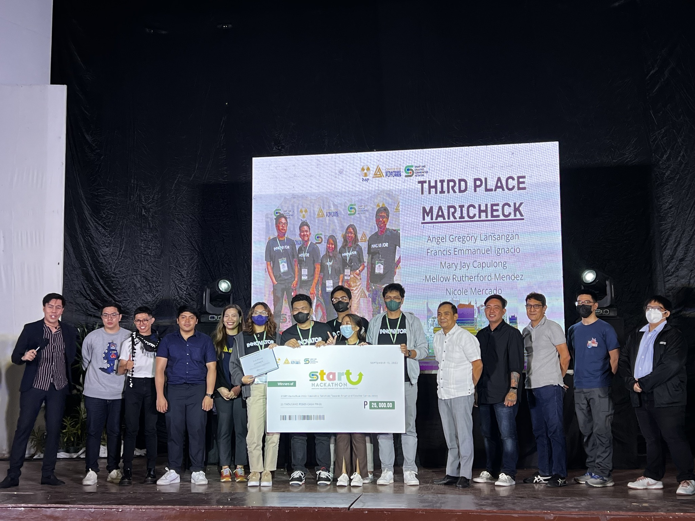

Team MARICHECK bags THIRD place in the first-ever DAP-sponsored START Hackathon 2022
School of Engineering and Architecture
September 15, 2022
The team MARICHECK of Holy Angel University’s School of Engineering and Architecture bagged 3rd place in the first-ever Development Academy of the Philippines (DAP) Center for Strategic Futures (CSF) 48-hour START Hackathon through the Smart and Creative Communities (SSC) Program.

Of the 58 entries from different industries, professional organizations, and HEIs nationwide, MARICHECK secured a spot in the Top 10 and competed in the 48-hour Hackathon. Team MARICHECK provides an innovative solution that encourages citizens’ participation in the planning and policymaking processes of Local Government Units through Digital Technology and Big Data. A pitching competition was conducted as a culminating activity, with Team MARICHECK landing Third Place, with a cash prize of Php 25,000.00 and a network that will help develop and scale up their technology.

MARICHECK founders are Engr. Mellow Rutherford Mendez, Engr. Francis Emmanuel Ignacio, Ms. Mary Jay Capulong, Ms. Nicole Mercado, and Mr. Angel Gregory Lansangan. With their winning, The team automatically qualifies for the Cohort 3 Co-Incubation Program of Encephalon TBI and BARAS TBI.
Congratulations, Angelites. We are proud of you!
Leave a comment